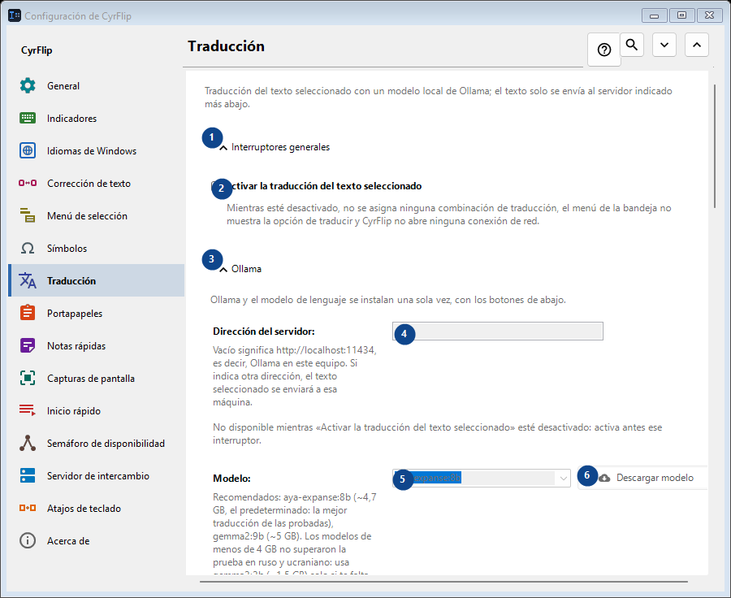
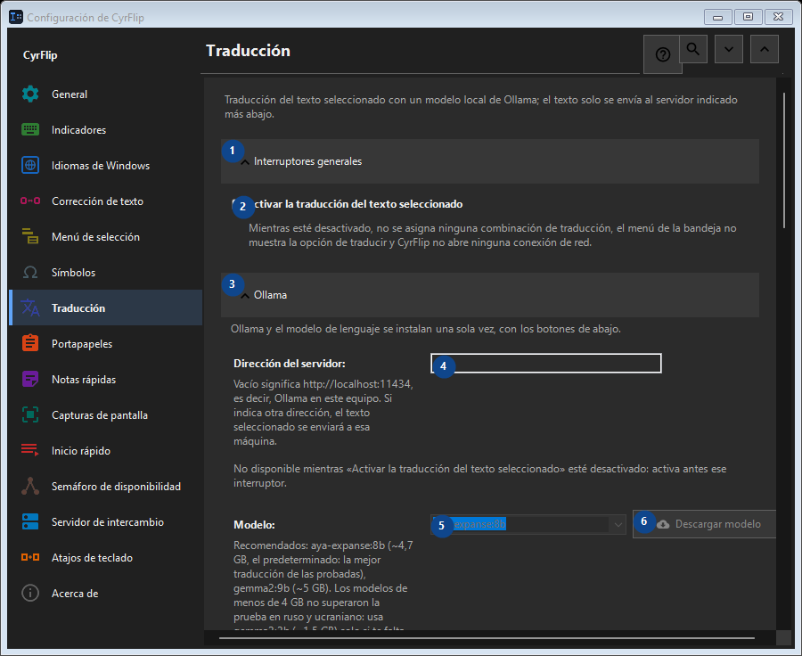

Traducción
Para qué sirve
Traducción del texto seleccionado con un modelo local de Ollama; el texto solo se envía al servidor indicado más abajo.


Orden de uso
Los ajustes se aplican de inmediato. No hay un orden obligatorio; usa los grupos siguientes.
Elementos
1. Interruptores generales
Usa este comando para la acción indicada. Lee cualquier confirmación antes de aceptarla.
Tus atajos2. Activar la traducción del texto seleccionado
Mientras esté desactivado, no se asigna ninguna combinación de traducción, el menú de la bandeja no muestra la opción de traducir y CyrFlip no abre ninguna conexión de red.
Tus atajos3. Ollama
Usa este comando para la acción indicada. Lee cualquier confirmación antes de aceptarla.
Tus atajos4. Dirección del servidor
No disponible mientras «Activar la traducción del texto seleccionado» esté desactivado: activa antes ese interruptor. Este elemento no está disponible. Activa primero la función o selecciona una entrada.
Tus atajos5. Modelo
No disponible mientras «Activar la traducción del texto seleccionado» esté desactivado: activa antes ese interruptor. Este elemento no está disponible. Activa primero la función o selecciona una entrada.
Tus atajos6. Descargar modelo - Modelo
No disponible mientras «Activar la traducción del texto seleccionado» esté desactivado: activa antes ese interruptor. Este elemento no está disponible. Activa primero la función o selecciona una entrada.
Tus atajos7. Instalar Ollama
No disponible mientras «Activar la traducción del texto seleccionado» esté desactivado: activa antes ese interruptor. Este elemento no está disponible. Activa primero la función o selecciona una entrada.
Tus atajos8. Iniciar Ollama
No disponible mientras «Activar la traducción del texto seleccionado» esté desactivado: activa antes ese interruptor. Este elemento no está disponible. Activa primero la función o selecciona una entrada.
Tus atajos9. Comprobar conexión
No disponible mientras «Activar la traducción del texto seleccionado» esté desactivado: activa antes ese interruptor. Este elemento no está disponible. Activa primero la función o selecciona una entrada.
Tus atajos10. Cancelar
Usa este comando para la acción indicada. Lee cualquier confirmación antes de aceptarla. Este elemento no está disponible. Activa primero la función o selecciona una entrada.
Tus atajos11. Iniciar Ollama automáticamente al traducir
No disponible mientras «Activar la traducción del texto seleccionado» esté desactivado: activa antes ese interruptor. Este elemento no está disponible. Activa primero la función o selecciona una entrada.
Tus atajos12. Mantener el modelo en memoria (min)
No disponible mientras «Activar la traducción del texto seleccionado» esté desactivado: activa antes ese interruptor. Este elemento no está disponible. Activa primero la función o selecciona una entrada.
Tus atajos13. Ollama y el modelo de lenguaje se instalan una sola vez, con los botones de abajo.
Elige o introduce el valor de la etiqueta contigua. Revísalo antes de continuar. Este elemento no está disponible. Activa primero la función o selecciona una entrada.
Tus atajos14. Esperar la carga del modelo como máximo (s)
No disponible mientras «Activar la traducción del texto seleccionado» esté desactivado: activa antes ese interruptor. Este elemento no está disponible. Activa primero la función o selecciona una entrada.
Tus atajos15. Ollama y el modelo de lenguaje se instalan una sola vez, con los botones de abajo.
Elige o introduce el valor de la etiqueta contigua. Revísalo antes de continuar. Este elemento no está disponible. Activa primero la función o selecciona una entrada.
Tus atajos16. Direcciones de traducción
Usa este comando para la acción indicada. Lee cualquier confirmación antes de aceptarla.
Tus atajos17. Añadir dirección...
No disponible mientras «Activar la traducción del texto seleccionado» esté desactivado: activa antes ese interruptor. Este elemento no está disponible. Activa primero la función o selecciona una entrada.
Tus atajos18. Resultado
Usa este comando para la acción indicada. Lee cualquier confirmación antes de aceptarla.
Tus atajos19. Copiar la traducción al portapapeles
No disponible mientras «Activar la traducción del texto seleccionado» esté desactivado: activa antes ese interruptor. Este elemento no está disponible. Activa primero la función o selecciona una entrada.
Tus atajos20. Pegar la traducción sobre la selección de inmediato
No disponible mientras «Activar la traducción del texto seleccionado» esté desactivado: activa antes ese interruptor. Este elemento no está disponible. Activa primero la función o selecciona una entrada.
Tus atajos21. Mostrar el texto original junto a la traducción
No disponible mientras «Activar la traducción del texto seleccionado» esté desactivado: activa antes ese interruptor. Este elemento no está disponible. Activa primero la función o selecciona una entrada.
Tus atajos22. Cerrar la ventana después de (s)
No disponible mientras «Activar la traducción del texto seleccionado» esté desactivado: activa antes ese interruptor. Este elemento no está disponible. Activa primero la función o selecciona una entrada.
Tus atajos23. No disponible mientras «Activar la traducción del texto seleccionado» esté desactivado: activa antes ese interruptor.
Elige o introduce el valor de la etiqueta contigua. Revísalo antes de continuar. Este elemento no está disponible. Activa primero la función o selecciona una entrada.
Tus atajos